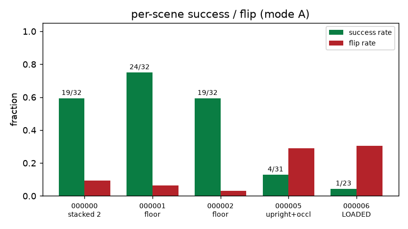
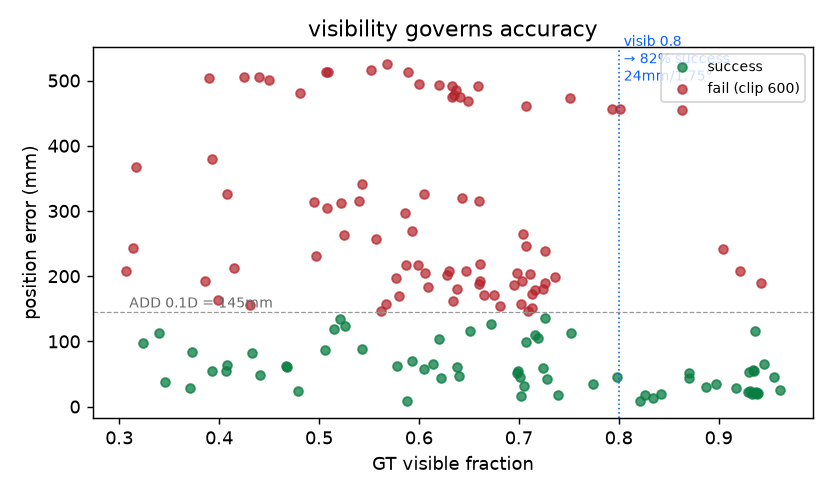
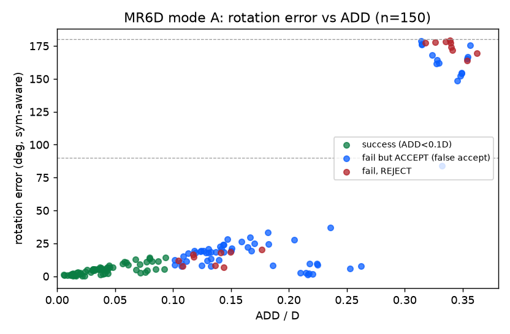
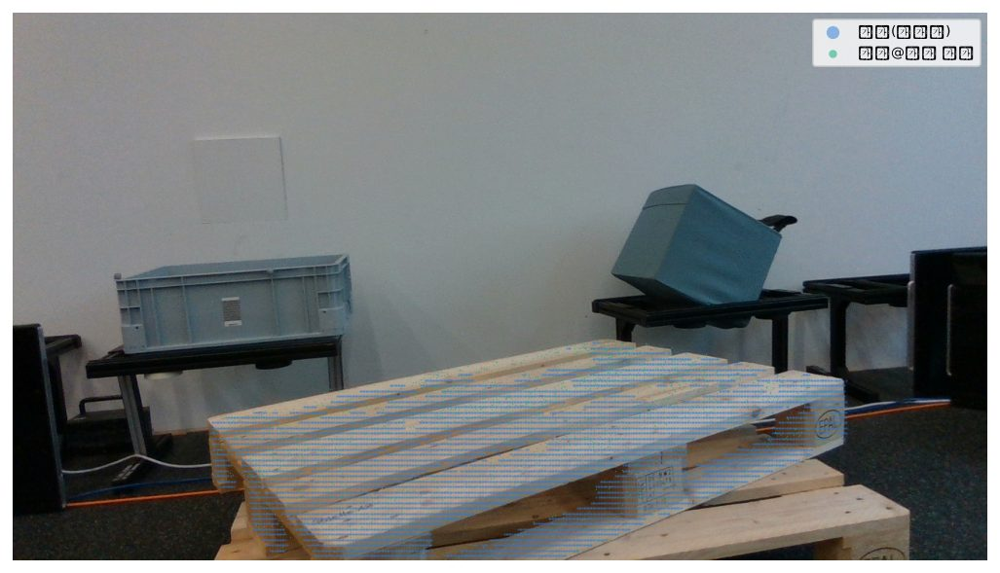
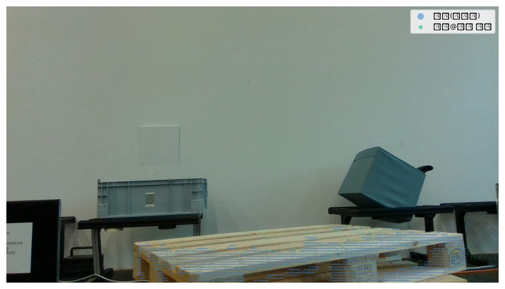
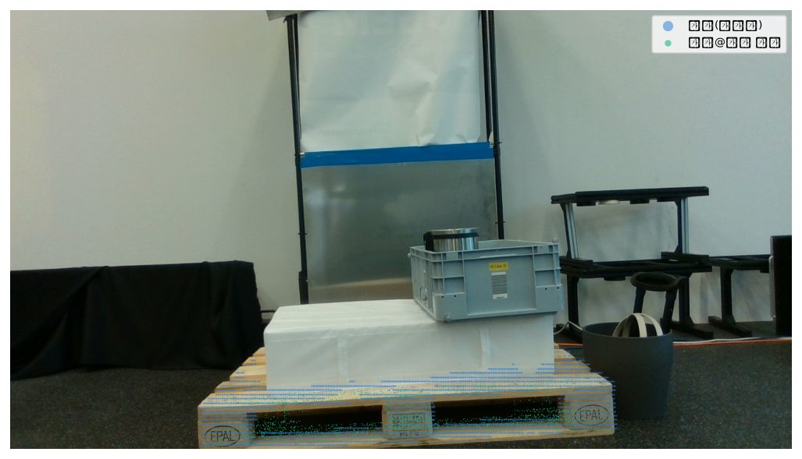
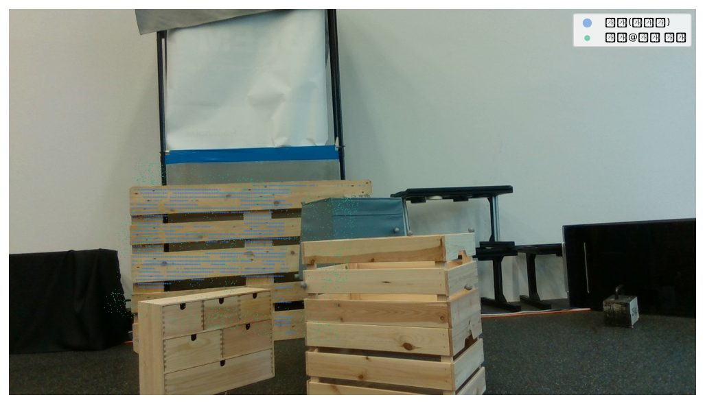

v1.0 · 2026-07-19 · 대상: v0-geo(무학습) · 데이터: MR6D val 5장면
(RealSense D435i 실측 RGB-D, BOP 포맷, 팔레트 6D 실측 공개셋으로는 사실상 유일) — 유로팔레트(obj_000001, 800×1200×144mm) 주석 303건 중
visib≥0.3 150프레임 · dense depth→ML-X(80) 격자 희소화 · 직립 프리이어 OFF · 대칭 C2 자동 검출 ·
코드 run_mr6d.py, 수치 정본 README ·
선행: 04 합성(팔레트) · 06 MegaPose(탁상 물체) · 07 적재·랩핑 서베이
82%visib≥0.8 성공률(23/28) — 성공 시 24mm/1.75°: 실측 이전성 확인
45%전체 150프레임(임의 시점·가림 포함) 성공률, ADD<0.1D
1/23실제 적재 팔레트 장면(000006) — 하부 밴드 모드의 정량 근거
오수락 65/132검증기 도메인 이전 실패 3번째 재확인 (M3-3)
1이 평가가 답하는 질문
04(합성 팔레트)·06(MegaPose 실측이지만 탁상 물체)에 이어 남아 있던 질문 —
"실측 센서로 찍은 진짜 팔레트에서도 통하는가?" MR6D는 07 서베이의 데이터셋 조사에서 찾은,
실측 depth + BOP 6D 포즈 주석을 가진 유일한 팔레트 공개셋이다. 평가 프로토콜은 MegaPose 평가와 동일:
모드 A(GT 마스크로 S1 우회 → S2 TDF 정합·coarse·S4 절연 평가), CAD는 데이터셋 동봉 모델을 그대로 온보딩(제로샷).
주의: 이 데이터는 우리 운용점(상시 3m·정면 밴드 시점·직립·LiDAR 정밀 depth)이 아니라
1.5~2.6m 사선·임의 로봇 시점·D435i 스테레오 depth다. 따라서 스펙(10mm/1°) 판정용이 아니라 도메인 이전성 검증이다
— 운용점 검증은 04가 담당한다.
2결과
구분
성공(ADD<0.1D)
성공례 정밀도(중앙값)
비고
전체 (n=150)
67 (45%)
52.5mm / 4.55°
실패 = 플립 22 · 90°급 1 · 기타 60
visib ≥ 0.8 (n=28)
23 (82%)
24mm / 1.75°
온전히 보이면 실측에서도 동작
visib < 0.6 (n=57)
21 (37%)
63mm / 5.61°
가림 지배
장면 000006 — 실제 적재 팔레트
1/23
—
플립 7건. §4
장면 000005 — 세워진 팔레트+전방 가림
4/31
—
플립 9건
모드 B (풀 파이프라인, n=33)
5 (15%)
81.9mm / 4.58°
클러터 병합 — MegaPose·LM-O와 동일 기전

장면별 성공/플립. 바닥 배치 장면(000000~000002)은 59~75%인 반면, 적재(000006)·세워짐+가림(000005)에서 붕괴 — 실패는 무작위가 아니라 장면 구조가 결정한다.

가시성이 정확도를 지배. visib 0.8 경계(파란 점선) 오른쪽에서 오차가 계단식으로 떨어진다. 실패(빨강)는 저가시성 영역에 몰려 있다.

회전 오차 vs ADD (n=150). MegaPose(06)와 같은 구조 — 실패가 연속적이지 않고 180° 플립 밴드에 클러스터로 분리된다(우상단). 플립 밴드에 파란 점(실패인데 ACCEPT)이 다수 = 오수락 65건의 시각화. 저가시성에서 10~35° 오정렬 영역(중앙)도 대부분 ACCEPT — 검증기가 이 도메인에서 변별력을 잃는다.
3케이스 — 성공과 실패의 구조

성공 (13mm/0.9°) — 팔레트 2단 적치의 윗단, visib 0.83. 초록(추정 포즈의 모델)이 실물 위에 정확히 얹힌다. 사선 시점·D435i 노이즈에서도 TDF argmax → projective ICP 사슬이 그대로 동작.

준성공 (103mm/9.2°) — 같은 팔레트를 거의 모서리 방향(grazing)에서 관측. 상판만 스치듯 보여 시선축 방향 병진·요가 약하게 구속되고, 상판 널판의 주기 패턴에 어긋 정합(슬롯 앨리어싱: inlier 0.99인데 coverage 0.8)하는 국소해가 생긴다.

실패 — 이 보고서의 핵심 그림: 실제 적재 팔레트 (장면 000006, 1/23). 흰 박스+KLT 빈이 팔레트에 실려 있다. 전체 CAD TDF 정합은 관측의 절반 이상이 "CAD에 없는 물체"(적재물이 아니라 가림에 의해 잘린 팔레트 자신)로 구성될 때 뷰 선택부터 무너진다. 산업계(ifm/SICK)가 하부 포켓 밴드만 보는 이유(07 §2)가 실측으로 재현된 것.

실패 — 세워진 팔레트 (장면 000005, 4/31, 플립 9). 팔레트가 수직으로 세워져 있고 앞에 나무 상자들이 가림. 직립 프리이어가 무의미한 자세인 데다 데크 격자가 앞/뒤 대칭에 가까워 플립이 다발 — 06의 "얇은 슬랩 앞/뒤 모호성"과 동일 기전.
4이 결과가 확정하는 것
관찰
함의
visib≥0.8에서 82% · 24mm/1.75°
기하 스택의 실측 이전성 확인 — 합성→실측 갭은 "붕괴"가 아니라 노이즈·시점 조건에 비례하는 열화
적재 장면 1/23 붕괴
하부 밴드 부분 정합 모드(07 §6)가 다음 구현 우선순위라는 정량 근거 — 전체 CAD 정합은 적재물 가림에 구조적으로 취약
M3-3 보정 셋에 MR6D 유형(사선·가림·적재) 필수 — 물리 증거 검증은 운용점 밖에서 변별력 상실
모드 B 15% (클러터 병합)
S1 기하 클러스터 한계의 3번째 재현 — M1 EViT-SAM 마스크 경로 근거
다음 단계 제안: 하부 밴드 모드 프로토타입(S0 idx_band 서브셋 + 밴드 한정 TDF·검증)을 만들어
장면 000006에서 1/23이 얼마나 회복되는지 측정 — MR6D가 이미 그 테스트베드다. 세워진 팔레트(000005)는
운용상 "비직립 물체 존재 여부" 결정 대기 항목(05)의 실측 사례이기도 하다.
5재현
# Data/mr6d/ (models + val 5장면, ~340MB — HF anas-gouda/mr6d에서 선별 다운로드)
uv run python eval/external_test/run_mr6d.py --n 150 # 평가 (mr6d_results/results.json)
uv run python eval/external_test/make_mr6d_report_assets.py # 본 보고서 이미지 재생성
CAD 전처리: mm→m 스케일만(AABB 중심이 이미 원점). 온보딩 2.0s에 C2 대칭(180°) 자동 검출.
ADD는 sym-aware(대칭 등가 전부 정답 정책). 시드 고정 — 결정론적 재현.